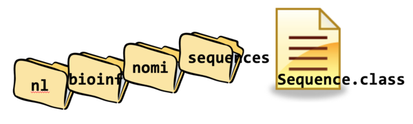

10. Packages and Imports#
So far, you may have stored all your class files inside a single source directory. For larger projects this will rapidly become a big unordered mess. Besides this, you will run into namespace problems: how many Sequence classes do you think are out there? How will the JVM be able to discern between them?
10.1. Class path#
The Classpath is a parameter in the Java Virtual Machine, and the Java compiler, that specifies the location of user-defined classes and packages. When you use a type (e.g., User, Duck, Nucleotide), the compiler and later the JVM look for classes that match the type name. The places where the search is performed are collectively known as the classpath.
10.2. Namespaces#
A namespace is a context in which a class name has meaning For example, many Java applications have a class called User. How can the JVM know which of these classes to use if there are more to be found on the classpath? In Java this is solved using packages.
10.3. Packages#
All serious Java projects have their code organized into packages.
Packages are “containers” that keep related classes together and avoid name conflicts with classes with identical names.
To keep packages (and thus namespaces) unique, they are usually formed by reversing the programmer/company web address:
nl.bioinf is a package name prefix I often use
Since there are more programmers working behind nl.bioinf, I also add my teacher abbreviation: nl.bioinf.nomi.
The next level is the current project you work on, e.g. “biojava light”, resulting in nl.bioinf.nomi.bjl.
Finally, all sequence-related classes I put in package sequences. This gives a full package name nl.bioinf.nomi.bjl.sequences. This is a long name, but quite essential. Fortunately, you will hardly ever type them.
Most of the core Java classes that you have worked with so far are in package java.lang.
The fully qualified name for class String is actually java.lang.String.
For classes in java.lang and the current package, you do not have to use the long package prefix.
Have a look at https://docs.oracle.com/javase/10/docs/api/java.base-summary.html, find package java.lang and you will see all the familiar classes Double, String, Math, Character etc.
Packages are represented in the directory structure of your source folder (src/main/java in Gradle managed projects).
When you have a package nl.bioinf.sequences and this package contains a source file Sequence.java containg top-level class Sequence, you will have to place the class file of Sequence at:
.../nl/bioinf/sequences/Sequence.class.
The IDE will takes care of these matters for you.
When you use types that are not from java.lang or the same package (=directory) your current class is in, you will have to refer to them using a fully qualified name, or import them.
Let’s look at an example
package nl.bioinf.nomi.sequences;
public class Sequence{
//class code
}
Class Sequence is declared to be included in package nl.bioinf.nomi.sequences. Package declarations are placed on the first line of the source file, outside the class body. The actual folder/file structure inside your source folder will be like this:

If you don’t use import statements, you will have to refer to classes using their fully qualified name, like this:
package nl.bioinf.nomi.sequences;
public class Sequence{
void somemethod(){
nl.bioinf.nomi.io.SequenceReader sr = new nl.bioinf.nomi.io.SequenceReader();
}
//more class code
}
With import statements, this becomes much more readable:
package nl.bioinf.nomi.sequences;
import nl.bioinf.nomi.io.SequenceReader;
public class Sequence{
void somemethod(){
SequenceReader sr = new SequenceReader();
}
//more class code
}
Import statements are placed under the package declaration, also outside the class body.
Because of the import statement, the short class name SequenceReader can now be used inside this class